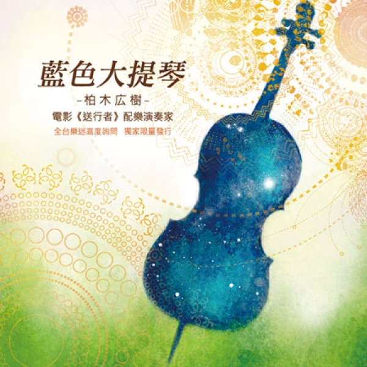
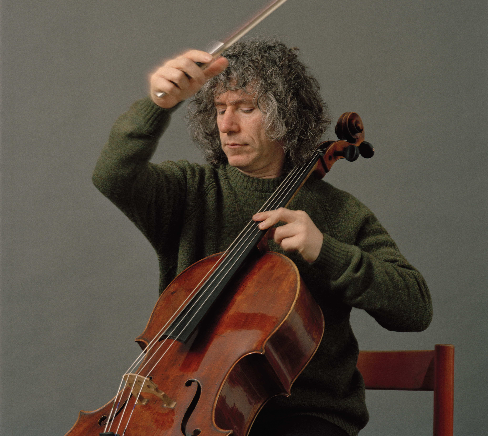
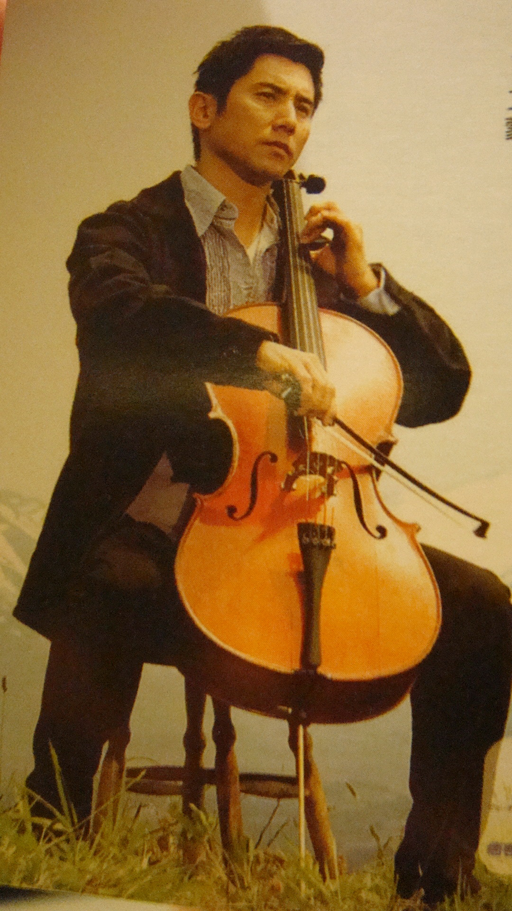

送行者電影中，有許多經典大提琴片段，讓我們以它為主軸來介紹大提琴。
送行者 電影介紹
請您輕閉雙眼 讓我送您走完最後一程。
原本在東京交響樂團擔任大提琴手的大悟（本木雅弘飾演），因樂團突然解散而放棄演奏家之路。失業的大悟於是和妻子美香（廣末涼子飾演）回到故鄉山形縣，
在報紙上看到「旅途協助工作」的徵職廣告而前往應徵，意外當場獲得錄用。詳問之後，大悟才知對方徵的是禮儀師！禁不住社長（山崎努飾演）半強迫半利誘說服，
他不情願地開始這份工作。初時大悟十分恐懼排斥，還得應付親友的誤解、週遭的鄙夷，讓他數度興起辭職念頭。但在親身經歷一場場送行儀式後，
他漸漸瞭解到禮儀師妝扮往生者「走上來生旅途」的重要意義，終能自信地投入工作，並重獲眾人尊敬。也因看盡死別的不捨與悲傷，大悟下定決心面對失落已久的親情。
在死生交界處，最美的送行帶來最深的體悟。
名家配名琴，一如才子配佳人，彼此才相得益彰，《送行者－禮儀師的樂章》中的本木雅弘是樂團裡的大提琴手，為了表現傑出，他不惜背下巨債貸款，添購名琴。
但是琴雖好，樂團的人氣卻沒起色，樂音才歇，老闆向大家一鞠躬，說聲抱歉，就宣布解散樂團了。就像將軍少了軍隊，公務員少了官署，本木雅弘無法接受這個事實，但是他沒有逃避事實，琴再名貴，他卻也只是位平凡的演奏家，無法拔萃，只能隨波逐流，更別說靠拉琴維生了，於是他把琴賣了，回老家另謀出路。
在家鄉等他的是當年習琴的一把四分之三小琴，琴小音色差，卻有著童年的記憶與溫度，所有的悲歡記憶都隨著小琴琴盒的開展，再度在他心田復甦。後來，做起納棺師，他還是會繼續拉大提琴，不拉名曲，只拉小時候曾經記憶的一些曲子，唯一的差別在於以前的拉琴場所不是在室內，就在舞台上，電影中的本木雅弘後來卻是以自然山河做背景，人琴與自然合一，讓人無限嚮往。
職業樂師的夢想不是人人得圓，對音樂的喜歡卻是隨時隨地都可以擁抱的，不再靠音樂維生或揚名，人琴合一的感覺其實更美好，音樂從來不會讓人傷心，而是人的欲望讓音樂變質了，後來再無所求地拉琴在在都是美好，其實也是《送行者》全片腳踏實地的一種生命態度。
音樂家久石讓替《送行者》打造的主題樂章，低沈又委婉地拉奏出人生的悠緩本質，在生死黯然的挫敗關頭，很能熨服人心，但是偶而你卻會聽見英國名曲「Danny Boy」的幾小節音符，在轉彎處跳出來與你的耳朵打招呼。
是的，我們曾經在日本電影《明日的記憶》的配樂聲中聽見了《念故鄉》的變奏（作曲家是大島滿），他曾經說過自己追求與傳達的是重建「記憶中所留下的音樂」。
是的，我們也曾經在日本電影《崖上的波妞》的配樂聲中聽見了聖賞「動物狂歡節的水族宮」以及舒伯特「聖母頌」的變奏（作曲家同樣是久石讓），我還來不及查訪久石讓自述的創作解釋，但是我相信他一再地在片中再現古典名曲的音樂片段，是刻意重新包裝古典的美麗，讓五到十二歲的《波妞》小影迷也能夠觸及古典音樂的精華，把種籽種在小朋友心田深處，期待有一天從「似曾相識」的歎息中展開美麗的追尋。
但是《送行者》的「Danny Boy」呢？是天涯赤子心？還是我們必需回到歌詞的世界中找尋創作的脈絡呢？
  
 NTOU CSE
NTOU CSE